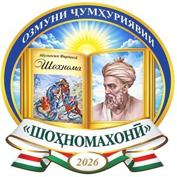

← Бозгашт
Озмуни «Шоҳномахонӣ» · 2026

НИЗОМНОМАИ
Озмуни ҷумҳуриявии «Шоҳномахонӣ»
Замимаи 1 ба амри Президенти Ҷумҳурии Тоҷикистон«29» августи соли 2025 , №АП-862
1 МУҚАРРАРОТИ УМУМӢ1. Озмуни ҷумҳуриявии «Шоҳномахонӣ» (минбаъд – Озмун) бо мақсади арҷгузорӣ ба хизматҳои шоири классики тоҷик Абулқосим Фирдавсӣ ва омӯзиши осору таърихи пурғановату пурифтихори миллати тоҷик, омӯзиши амиқу ҳамаҷонибаи корномаҳои шоистаи ниёгони миллат дар тули таърих, тақвияти ҳисси худогоҳӣ ва худшиносии миллӣ, ифтихори ватандорӣ, таҳкими ҳофизаи аҳолӣ ва ба ин васила, шинохти нақши халқи куҳанбунёду фарҳангсолори тоҷик дар рушди тамаддуни инсоният, ки бо далелҳои раднопазир ва бо такя ба сарчашмаҳои илмию таърихӣ дар китоби «Шоҳнома»-и безаволи Абулқосим Фирдавсӣ инъикос ёфтааст, таҳти сарпарастии Президенти Ҷумҳурии Тоҷикистон дар соли 2026 доир мегардад.
2. Озмуни ҷумҳуриявии «Шоҳномахонӣ» бо мақсади баланд бардоштани завқи китобхонӣ, тақвияти неруи зеҳнӣ, дарёфти чеҳраҳои нави суханвару сухандон, арҷ гузоштан ба арзишҳои миллию фарҳангӣ, инкишофи қобилияти эҷодӣ, таҳкими эҳсоси худогоҳию худшиносӣ, такмили захираи луғавӣ, тақвияти ҷаҳони маънавӣ миёни ҳамаи қишрҳои ҷомеа гузаронида мешавад.
3. Иштирокдорони Озмун ба гурӯҳҳои зерин ҷудо карда мешаванд:
хонандагони муассисаҳои таҳсилоти миёнаи умумӣ ва ибтидоии касбӣ (иборат аз се зергурӯҳ):
хонандагони синфҳои 1-4 муассисаҳои таҳсилоти миёнаи умумӣ;
хонандагони синфҳои 5-8;
хонандагони синфҳои 9-11 ва хонандагони муассисаҳои таҳсилоти ибтидоии касбӣ (синфҳои 9-11);
донишҷӯёни муассисаҳои таҳсилоти миёна ва олии касбӣ (бакалавр, магистр);
омӯзгорони ҳамаи зинаҳои таҳсилот, ходимони илмию адабии муассисаҳои илмиву эҷодӣ, фарҳангу санъат, аспирантон, унвонҷӯён, номзадони илм ва докторантҳои муассисаҳои таҳсилоти олии касбӣ ва муассисаҳои илмӣ (ба истиснои олимону донишмандоне, ки вобаста ба «Шоҳнома»-и Абулқосим Фирдавсӣ кори илмӣ ё дигар тадқиқот анҷом додаанд, аъзои вобаста ва пайвастаи Академияи миллии илмҳо ва академияҳои соҳавӣ);
калонсолон ва намояндагони касбу кори гуногун.
↑ Ба мундариҷа
2 САРПАРАСТ ВА МАСЪУЛОНИ ОЗМУН4. Сарпарасти Озмун Президенти Ҷумҳурии Тоҷикистон мебошад.
5. Масъулони баргузории Озмун вазоратҳои маориф ва илм, фарҳанг, Кумитаи телевизион ва радиои назди Ҳукумати Ҷумҳурии Тоҷикистон, Академияи миллии илмҳои Тоҷикистон, Муассисаи давлатии «Китобхонаи миллӣ»-и Дастгоҳи иҷроияи Президенти Ҷумҳурии Тоҷикистон мебошанд.
6. Кумитаҳои оид ба таҳсилоти ибтидоӣ ва миёнаи касбӣ, кор бо ҷавонон ва варзиш, телевизион ва радио, кор бо занон ва оила, Иттифоқи нависандагони Тоҷикистон дар тарғиб, ҷалб ва ҷараёни баргузории Озмун иштирок мекунанд.
7. Мақомоти иҷроияи ҳокимияти давлатии Вилояти Мухтори Кӯҳистони Бадахшон, вилоятҳои Суғду Хатлон, шаҳри Душанбе ва шаҳру ноҳияҳои тобеи ҷумҳурӣ ҷиҳати дар сатҳи баланд ташкил ва баргузор кардани даврҳои якум, дуюм ва сеюми Озмун масъул буда, ғолибон ва омӯзгорони онҳоро аз ҷиҳати моддӣ ва маънавӣ ҳавасманд мегардонанд.
8. Дар Вилояти Мухтори Кӯҳистони Бадахшон, вилоятҳои Суғду Хатлон, шаҳри Душанбе ва шаҳру ноҳияҳои тобеи ҷумҳурӣ, раёсат, шуъбаҳо, бахшҳои маориф, рушди иҷтимоӣ ва робита бо ҷомеа, фарҳанг, ҷавонон ва варзиш масъулони ташкил ва баргузории Озмун мебошанд.
↑ Ба мундариҷа
3 КОМИССИЯИ ОЗМУН9. Барои гузаронидани Озмун комиссияи Озмуни ҷумҳуриявӣ (минбаъд – комиссияи Озмун) таъсис дода шуда, ҳайати он бо амри Президенти Ҷумҳурии Тоҷикистон тасдиқ карда мешавад.
10. Комиссия аз раис, муовин, аъзо ва котиб иборат мебошад.
11. Ваколати комиссияи Озмун:
таҳияи ҷадвали баргузории Озмун ва назорати он;
тасдиқи тартиб, талабот ва тавзеҳот оид ба Озмун;
пешниҳоди ҳайати ҳакамон барои даврҳои сеюм ва чоруми Озмун;
якҷо бо ҳайати ҳакамон гузаронидани семинари машваратӣ;
назорати риояи талабот ва пешниҳоди тавсияҳо ба довталабони Озмун;
омӯзиш ва тавсияи ҳуҷҷатҳои пешниҳодшудаи иштирокдорони Озмун ба даври ниҳоӣ;
баррасии пешниҳодҳои ҳайати ҳакамон ва арзу шикоятҳои иштирокчиён;
тасдиқ ва эълони натиҷаи хулосаи ҳайати ҳакамони даври чоруми Озмун;
ҷамъбасти натиҷаи ниҳоӣ ва пешниҳоди он ба Президенти Ҷумҳурии Тоҷикистон барои шиносоӣ ва маълумот.
↑ Ба мундариҷа
4 ТАРТИБИ БАРГУЗОРИИ ОЗМУН12. Озмун аз чор давр иборат буда, аз моҳи марти соли 2026 то моҳи декабри соли 2026 ба таври зайл ташкил ва гузаронида мешавад:
Даври якум – моҳи марти соли 2026 дар муассисаҳои таълимӣ, муассисаҳои илмӣ ва дигар ташкилотҳо;Даври дуюм – моҳи апрели соли 2026 дар маркази шаҳр ва ноҳияҳо (ба истиснои шаҳри Душанбе);Даври сеюм – нимаи дуюми моҳи сентябри соли 2026 дар марказҳои Вилояти Мухтори Кӯҳистони Бадахшон, вилоятҳои Суғду Хатлон, шаҳри Душанбе ва шаҳру ноҳияҳои тобеи ҷумҳурӣ;Даври чорум – нимаи якуми моҳи декабр дар Муассисаи давлатии «Китобхонаи миллӣ»-и Дастгоҳи иҷроияи Президенти Ҷумҳурии Тоҷикистон.
Эзоҳ: Донишҷӯён, аспирантон, унвонҷӯён ва докторантҳои муассисаҳои таълимӣ, илмӣ танҳо дар маҳалле иштирок карда метавонанд, ки муассисаи таълимӣ ва ё илмиашон дар ҳамон маҳал қарор дорад.
13. Протоколи ҳайати ҳакамон ба Комиссияи ҷумҳуриявӣ ба даври чорум бо имзои раиси Вилояти Мухтори Кӯҳистони Бадахшон, раисони вилоятҳои Суғду Хатлон, шаҳри Душанбе, шаҳру ноҳияҳои тобеи ҷумҳурӣ ва раисони ҳакамони даври сеюм пешниҳод мешавад.
14. Ҷойи баргузории даврҳои Озмун дар деҳот, шаҳрак, марказҳои ВМКБ, вилоятҳои Суғду Хатлон, шаҳри Душанбе, шаҳру ноҳияҳои тобеи ҷумҳурӣ аз ҷониби мақомоти иҷроияи маҳаллии ҳокимияти давлатӣ муайян карда мешавад.
15. Масъулияти корҳои ташкилӣ, баргузории даврҳои якум, дуюм ва сеюм ба зиммаи мақомоти иҷроияи ҳокимияти давлатии ВМКБ, вилоятҳои Суғду Хатлон, шаҳри Душанбе ва шаҳру ноҳияҳои тобеи ҷумҳурӣ вогузор карда мешавад. Шумораи ғолибони даври сеюми Озмун, ки ба даври чорум пешниҳод мешаванд, иштирокчиён аз гурӯҳҳо набояд аз 6 нафар зиёд бошад.
16. Ҷараёни баргузории даврҳои якум, дуюм, сеюм ва чоруми Озмун тавассути шабакаҳои телевизионӣ, иҷтимоӣ ва воситаҳои ахбори омма ба таври васеъ инъикос ва пахш карда мешавад.
17. Муҳлати пешниҳоди ҳуҷҷатҳои ғолибони даври сеюм барои иштирок дар даври чорум аз ҷониби ҳайати ҳакамон бо протоколҳо расмӣ тасдиқ шуда, ба Комиссияи озмун то 20 октябри соли 2026 муқаррар карда мешавад.
18. Вазоратҳои маориф ва илм, фарҳанг, Академияи миллии илмҳои Тоҷикистон, Муассисаи давлатии «Китобхонаи миллӣ» ва Кумитаи телевизион ва радиои назди Ҳукумати Ҷумҳурии Тоҷикистон масъулони гузаронидани маросими тантанавии супоридани ҷоизаҳо ба ғолибони Озмун мебошанд.
↑ Ба мундариҷа
5 ШАРТҲОИ ИШТИРОК ДАР ОЗМУН19. Дар Озмун аҳолии кишвар, аз ҷумла хонандагони муассисаҳои таҳсилоти миёнаи умумӣ, ибтидоии касбӣ ва донишҷӯёни муассисаҳои таҳсилоти миёна ва олии касбӣ, шунавандагони муассисаҳои таҳсилоти касбии баъд аз муассисаи олии таълимӣ, аспирантон, унвонҷӯён ва докторантҳо, ходимони илм, омӯзгорони ҳамаи зинаҳои таҳсилот, кормандони фарҳангу санъат, калонсолон ва намояндагони касбу кори гуногун (ба истиснои олимону муҳаққиқоне, ки вобаста ба «Шоҳнома»-и безаволи Абулқосим Фирдавсӣ тадқиқот анҷом додаанд ё рисолаҳои илмӣ навишта ҳимоя карда, узви вобаста ва пайвастаи Академияи миллии илмҳои Тоҷикистон мебошанд) иштирок карда метавонанд.
20. Забони баргузории Озмун забони тоҷикӣ мебошад.
21. Иштирокдорон ба даври чоруми Озмун дафтар омода намуда, шарҳи ҳоли мухтасари худ, нусхаи чопии достонҳои азбаркардаи «Шоҳнома», маълумот аз хусуси иштирок дар Озмуну олимпиадаҳо (бо пешниҳоди нусхаи ифтихорномаю ҷоизаҳои ишғолнамуда), нусхаи протоколи даври сеюми Озмунро ба комиссияи Озмун ба таври хаттӣ пешниҳод менамоянд. Агар довталаб ба ҳайси хонандаи муассисаи таҳсилоти миёнаи умумӣ дар даврҳои якуму дуюм ва сеюм ба қайд гирифта шуда бошад ва дар даври чорум донишҷӯйи муассисаҳои таҳсилоти миёна ва олии касбӣ шуда бошад, ҳамчун хонандаи муассисаи таҳсилоти миёнаи умумӣ ва ибтидоии касбӣ дар даври чорум иштирок мекунад.
22. Иштирокдорон барои иштирок дар Озмун нусхаи шиноснома ва ё шаҳодатномаи таваллуд пешниҳод менамоянд.
23. Мақомоти иҷроияи ҳокимияти давлатии ВМКБ, вилоятҳои Суғду Хатлон, шаҳри Душанбе ва шаҳру ноҳияҳои тобеи ҷумҳурӣ дар назди раёсат ва шуъбаҳои маориф комиссияи қабули ҳуҷҷатҳои довталабони Озмунро таъсис дода, як нафарро котиби масъул таъин менамоянд. Котибони масъули комиссияҳои қабул ҳуҷҷатҳои довталабонро дар асоси банди 21 Низомномаи мазкур санҷида, дар асоси санад онро ба Комиссияи ҷумҳуриявӣ пешниҳод мекунанд. Котибони масъули комиссияҳои қабул суроға, рӯз ва ҷойи баргузории Озмунро ба иштирокдорон тавассути воситаҳои ахбори омма ва масъулон эълон менамоянд.
24. Ғолибони даври чоруми Озмун, ки сазовори ҷойҳои якум, дуюм, сеюм ва барандаи Шоҳҷоиза гардиданд, ҳуқуқи дар ду Озмуни солҳои дигар иштирок карданро надоранд.
↑ Ба мундариҷа
6 ТАЛАБОТ БА ИШТИРОКДОРОНИ ОЗМУН25. Савияи донишҳои иштирокдорони Озмун нахуст аз рӯйи дафтари довталаб, ки дар се нусха ба ҳакамон пешниҳод мешавад ва дурусту беғалат будани қайдҳои довталаб дар ин дафтар муайян ва минбаъд баҳогузорӣ карда мешавад.
26. Талабот ба хонандагони синфҳои ибтидоӣ (1-4):
аз ёд донистани на кам аз 500 мисраъ , шоҳбайт ва ё порчаҳо аз «Шоҳнома»;
донистани шарҳи ҳоли мухтасари Абулқосим Фирдавсӣ;
аз ёд донистани байт ва порчаҳои алоҳида дар васфи ақлу хирад, Ватану ватандӯстӣ, сулҳу ваҳдат, ростӣ, донишу варзиш ва ғайра;
қироати ифоданоку таъсирбахши порчаҳо;
нақли равон ва ифоданок;
донистани на камтар аз 10 қаҳрамон ва корномаи мухтасари онҳо.
27. Талабот ба хонандагони синфҳои 5-8:
аз ёд донистани на кам аз 1000 байт , шоҳбайт ва ё порчаҳо аз «Шоҳнома»;
шарҳ дода тавонистани мазмуни маводде, ки аз ёд кардааст;
донистани шарҳи ҳоли Абулқосим Фирдавсӣ;
аз ёд донистани байт ва порчаҳои алоҳида дар васфи ақлу хирад, Ватану ватандӯстӣ, сулҳу ваҳдат, ростӣ, донишу варзиш ва ғайра;
қироати ифоданоку таъсирбахши порчаҳо;
нақли равон ва ифоданок;
донистани луғат;
донистани на камтар аз 40 қаҳрамон ва корномаи мухтасари онҳо;
баён кардан ва шарҳ дода тавонистани корномаи қаҳрамонони асосии «Шоҳнома».
28. Талабот ба хонандагони синфҳои 9-11 ва ибтидоии касбӣ:
аз ёд донистани на кам аз 1500 байт , шоҳбайт ва ё порчаҳо аз «Шоҳнома» ва як достони мукаммал;
шарҳ дода тавонистани мазмуни маводде, ки аз ёд кардааст;
донистани шарҳи ҳоли Абулқосим Фирдавсӣ;
аз ёд донистани байт ва порчаҳои алоҳида дар васфи ақлу хирад, Ватану ватандӯстӣ, сулҳу ваҳдат, ростӣ, донишу варзиш ва ғайра;
қироати ифоданоку таъсирбахши порчаҳо;
нақли равон ва ифоданок;
донистани луғат;
донистани на камтар аз 60 қаҳрамон ва корномаи мухтасари онҳо;
баён кардан ва шарҳ дода тавонистани корномаи мухтасари қаҳрамонони «Шоҳнома»;
донистани таърихи эҷоди «Шоҳнома», манбаъҳо ва зарурати эҷоди асар;
баён кардан ва шарҳ дода тавонистани корномаи қаҳрамонони асосии «Шоҳнома»;
донистани тартиби баргузор шудани муҳимтарин ҳодисот дар «Шоҳнома».
29. Талабот ба донишҷӯён, омӯзгорон, олимон (гурӯҳи 2 ва 3):
аз ёд донистани на кам аз 2000 байт , шоҳбайт ва ё порчаҳо аз «Шоҳнома» ва як ё ду достони мукаммал;
шарҳ дода тавонистани мазмуни пурраи маводде, ки аз ёд кардааст;
донистани шарҳи ҳоли мукаммали Абулқосим Фирдавсӣ;
аз ёд донистани байт ва порчаҳои алоҳида дар васфҳои мазкур;
қироати ифоданоку таъсирбахши порчаҳо;
нақли равон ва ифоданок;
донистани луғат;
донистани на камтар аз 70 қаҳрамон ва корномаи онҳо;
баён кардан ва шарҳ дода тавонистани шарҳи ҳоли қаҳрамонони «Шоҳнома»;
донистани таърихи эҷоди «Шоҳнома», манбаъҳо ва зарурати эҷоди асар;
донистани тартиби баргузор шудани муҳимтарин ҳодисот дар «Шоҳнома»;
донистани вазъи адабӣ, фарҳангӣ, вазъи сиёсии замони зиндагии Абулқосим Фирдавсӣ ва ҳамзамонони машҳури ӯ;
мутолиаи бештари мақола, рисола, тадқиқотҳои дигари илмию эҷодӣ;
донистани нақши таърихии шоҳони «Шоҳнома».
30. Талабот ба калонсолон (гурӯҳи 4):
аз ёд донистани на кам аз 1000 байт , шоҳбайт ва ё порчаҳо аз «Шоҳнома» ва як достони мукаммал;
шарҳ дода тавонистани мазмуни пурраи маводде, ки аз ёд кардааст;
донистани шарҳи ҳоли Абулқосим Фирдавсӣ;
аз ёд донистани байт ва порчаҳои алоҳида;
қироати ифоданоку таъсирбахши порчаҳо;
нақли равон ва ифоданок;
донистани луғат;
донистани на камтар аз 40 қаҳрамон ва корномаи онҳо;
баён кардан ва шарҳ дода тавонистани шарҳи ҳоли баъзе қаҳрамонони «Шоҳнома»;
донистани таърихи эҷоди «Шоҳнома», манбаъҳо ва зарурати эҷоди асар;
донистани тартиби баргузор шудани муҳимтарин ҳодисот;
мухтасар донистани вазъи адабӣ, фарҳангӣ, вазъи сиёсии замони зиндагии Фирдавсӣ ва баъзе ҳамзамонони машҳури ӯ;
донистани нақши таърихии шоҳони «Шоҳнома»;
донистани шуҳрати «Шоҳнома» миёни мардуми дигари олам.
31. Иштирокдорон дар хондани дигар паҳлуҳои «Шоҳнома» вобаста ба номинатсия озод мебошанд, то холҳои бештар ба даст оваранд.
32. Ба иштирокдорон барои муаррифии асари безаволи «Шоҳнома»-и Абулқосим Фирдавсӣ 25-30 дақиқа дода мешавад.
33. Барои донистани байт, порча, достонҳои «Шоҳнома» бо забонҳои дигари олам ба иштирокдорон имтиёзи махсус дода мешавад.
↑ Ба мундариҷа
7 МЕЪЁРИ АРЗЁБИИ ҒОЛИБОНИ ОЗМУН34. Ҳайати ҳакамони Озмун савияи дониши иштирокдоронро чунин арзёбӣ мекунанд:
миқдори байти азёдкарда;
қироати дурусти шеър;
шарҳи маънии мисраъ, байт, порча ё достон, ки пешниҳод мешавад;
риояи одоби тартиб додан ва дурусту мухтасар будани дафтаре, ки довталаб пешниҳод кардааст ва беғалат будани он;
баёни ҳодисаҳои асар ва дурустии силсилаи воқеаҳо;
нақли бурро ва равон;
донистани луғат;
ҷавоб дода тавонистан ба дигар шарт ва талаботе, ки дар боби 6 ҳамин Низомнома зикр шудаанд.
↑ Ба мундариҷа
8 ҲАЙАТИ ҲАКАМОН35. Ҳайати ҳакамони даврҳои якум ва дуюм аз тарафи мақомоти иҷроияи ҳокимияти давлатии ВМКБ, вилоятҳои Суғду Хатлон, шаҳри Душанбе ва шаҳру ноҳияҳои тобеи ҷумҳурӣ аз ҳисоби омӯзгорон, адибон, олимону рӯзноманигорон, роҳбарони китобхонаҳо, аъзои ҷамъияти китобдӯстон ва муаллимони сол дар мувофиқа бо комиссияи Озмун интихоб гардида, ҳайати ҳакамони даврҳои сеюм ва чорум бо пешниҳоди вазоратҳои маориф ва илм, фарҳанг, Академияи миллии илмҳо, Муассисаи давлатии «Китобхонаи миллӣ» ва Кумитаи телевизион ва радио аз ҷониби комиссияи Озмун тасдиқ карда мешавад. Ҳайати ҳакамон амалҳои зеринро иҷро мекунад:
тибқи пешниҳоди комиссияи Озмун маҳорату истеъдод ва дараҷаи дониши иштирокдоронро натиҷагирӣ мекунад;
холҳоро муайян карда, бо овоздиҳии кушода ғолибро муайян менамояд;
натиҷаи Озмунро дар протокол дарҷ карда, бо имзои аъзои ҳакамон онро тасдиқ менамояд.
36. Хулосаи ҳайати ҳакамони даври чорум дар комиссияи Озмун баррасӣ ва тасдиқ карда мешавад.
↑ Ба мундариҷа
9 ТАЪМИНОТИ МОЛИЯВИИ ОЗМУН37. Хароҷоти даврҳои якум, дуюм, сеюм ва хароҷоти вобаста ба сафарбаркунии ғолибон ва омӯзгорони онҳо ба даври чоруми Озмун, будубоши онҳо дар маҳалли баргузории Озмун аз ҳисоби буҷети мақомоти иҷроияи ҳокимияти давлатии ВМКБ, вилоятҳои Суғду Хатлон, шаҳри Душанбе ва шаҳру ноҳияҳои тобеи ҷумҳурӣ ва сарчашмаҳои дигари маблағгузории бо қонунгузорӣ манънагардида пардохт карда мешавад.
38. Ғолибони даврҳои якум, дуюм, сеюми Озмун ва омӯзгорони онҳо аз ҷониби мақомоти иҷроияи ҳокимияти давлатии ВМКБ, вилоятҳои Суғду Хатлон, шаҳри Душанбе, шаҳру ноҳияҳои тобеи ҷумҳурӣ ва ташкилотҳо ба таври моддию маънавӣ ҳавасманд гардонида мешаванд.
39. Хароҷоти баргузории чорабинии даври чоруми Озмун аз суратҳисоби махсуси Дастгоҳи иҷроияи Президенти Ҷумҳурии Тоҷикистон пардохт карда мешавад.
40. Ба ғолибони даври чоруми Озмун ва ба хонандагони муассисаҳои таҳсилоти миёнаи умумӣ, ки дар даври чорум ҷойҳои якум, дуюм, сеюм ва Шоҳҷоизаро сазовор гардидаанд, ба омӯзгорони онҳо тибқи тартиби муқарраргардида аз ҳисоби маблағҳои фонди захиравии Президенти Ҷумҳурии Тоҷикистон ҷоиза ва мукофоти пулӣ дода мешавад.
41. Ғолибони даври 1, 2 ва 3 аз ҷониби мақомоти иҷроияи ҳокимияти давлатии ВМКБ, вилоятҳои Суғду Хатлон, шаҳри Душанбе ва шаҳру ноҳияҳои тобеи ҷумҳурӣ ба таври моддию маънавӣ ҳавасманд гардонида мешаванд.
42. Омӯзгороне, ки шогирдони онҳо дар даври ниҳоӣ сазовори ҷойи якум мешаванд, бо нишони «Аълочии маориф ва илми Ҷумҳурии Тоҷикистон» қадр карда мешаванд.
43. Барои ҳавасмандгардонии ғолибони ҳамаи даврҳои Озмун ва омӯзгорони онҳо тибқи қонунгузории Ҷумҳурии Тоҷикистон ҷалби сарпарастон иҷозат дода мешавад.
↑ Ба мундариҷа
10 ТАРТИБИ ДАРЁФТИ ШОҲҶОИЗА44. Барои дарёфти Шоҳҷоиза довталабоне метавонанд иштирок намоянд, ки дар даври ҷумҳуриявӣ аз рӯйи гурӯҳҳои синну солии пешниҳодшуда ҷойҳои ифтихориро сазовор гардидаанд.
45. Шоҳҷоиза ба иштирокдоре дода мешавад, ки беш аз 70 фоизи асари «Шоҳнома»-и Абулқосим Фирдавсиро мутолиа ва ҳифз намудааст ва хуб қироат менамояд.
↑ Ба мундариҷа
11 ИМТИЁЗҲО46. Ғолибони даври чорум (ҷойҳои 1, 2, 3) ва барандаи Шоҳҷоиза баъди хатми муассисаи таҳсилоти миёнаи умумӣ, ибтидоии касбӣ, ба ихтисоси интихобкардаи худ бе Озмун ва ба тариқи ройгон ба муассисаҳои таҳсилоти миёна ва олии касбии кишвар қабул карда мешаванд. Тартиби қабули ғолибони даври чоруми Озмун ва барандаи Шоҳҷоизаро Вазорати маориф ва илм, Кумита оид ба таҳсилоти ибтидоӣ ва миёнаи касбӣ муайян менамоянд.
47. Вазорати маориф ва илм протокол ва санадҳои ғолибони Озмунро дар асоси таҳияи тартиби махсус барои 10 сол нигоҳдорӣ намуда, баъдан ба бойгонӣ месупорад.
↑ Ба мундариҷа
З2 ҲАЙАТИ КОМИССИЯИ ОЗМУН
Замимаи 2 ба амри Президенти Ҷумҳурии Тоҷикистон
Ҳайати комиссияи Озмуни ҷумҳуриявии «Шоҳномахонӣ»:
Муовини Сарвазири Ҷумҳурии Тоҷикистон (сарпарасти соҳа), раиси Комиссия ;
Вазири маориф ва илми Ҷумҳурии Тоҷикистон, муовини раиси Комиссия ;
Президенти Академияи миллии илмҳои Тоҷикистон, муовини раиси Комиссия ;
Директори Муассисаи давлатии «Китобхонаи миллӣ»-и Дастгоҳи иҷроияи Президенти Ҷумҳурии Тоҷикистон, муовини раиси Комиссия ;
Муовини якуми вазири маориф ва илми Ҷумҳурии Тоҷикистон, котиби Комиссия .
Аъзои Комиссия:
Сардори раёсати маориф, фарҳанг ва иттилооти Дастгоҳи иҷроияи Президенти Ҷумҳурии Тоҷикистон;
Мушовири бахши Ёрдамчии Президенти Ҷумҳурии Тоҷикистон оид ба масъалаҳои рушди иҷтимоӣ ва робита бо ҷомеа;
Муовини вазири фарҳанги Ҷумҳурии Тоҷикистон;
Раиси Кумита оид ба таҳсилоти ибтидоӣ ва миёнаи касбии назди Ҳукумати Ҷумҳурии Тоҷикистон;
Раиси Кумитаи телевизион ва радиои назди Ҳукумати Ҷумҳурии Тоҷикистон;
Раиси Кумитаи кор бо ҷавонон ва варзиши назди Ҳукумати Ҷумҳурии Тоҷикистон;
Раиси Кумитаи кор бо занон ва оилаи назди Ҳукумати Ҷумҳурии Тоҷикистон;
Раиси Иттифоқи нависандагони Тоҷикистон;
Ректори Донишгоҳи миллии Тоҷикистон;
Ректори Донишгоҳи давлатии омӯзгории Тоҷикистон ба номи Садриддин Айнӣ;
Директори Институти забон ва адабиёт Академияи миллии илмҳои Тоҷикистон.
↑ Ба мундариҷа
З3 ҶОИЗАҲОИ ОЗМУН
Замимаи 3 ба амри Президенти Ҷумҳурии Тоҷикистон
Мукофотҳои пулӣ барои ғолибони Озмун аз рӯйи шаш гурӯҳ ва як номинатсия ба таври зерин муқаррар карда мешаванд:
Хонандагони синфҳои 1-4
№ Ҷой Маблағ Шумора Маблағи умумӣ (сомонӣ)
1 Якум 70 000 1 70 000 2 Дуюм 50 000 2 100 000 3 Сеюм 40 000 3 120 000
Ҳамагӣ 6 290 000
Хонандагони синфҳои 5-8
№ Ҷой Маблағ Шумора Маблағи умумӣ (сомонӣ)
1 Якум 70 000 1 70 000 2 Дуюм 50 000 2 100 000 3 Сеюм 40 000 3 120 000
Ҳамагӣ 6 290 000
Синфҳои 9-11 ва ибтидоии касбӣ
№ Ҷой Маблағ Шумора Маблағи умумӣ (сомонӣ)
1 Якум 70 000 1 70 000 2 Дуюм 50 000 2 100 000 3 Сеюм 40 000 3 120 000
Ҳамагӣ 6 290 000
Донишҷӯёни таҳсилоти миёна ва олии касбӣ (бакалавр, магистр)
№ Ҷой Маблағ Шумора Маблағи умумӣ (сомонӣ)
1 Якум 70 000 1 70 000 2 Дуюм 50 000 2 100 000 3 Сеюм 40 000 3 120 000
Ҳамагӣ 6 290 000
Омӯзгорон, олимон, аспирантон, унвонҷӯён, докторантҳо
№ Ҷой Маблағ Шумора Маблағи умумӣ (сомонӣ)
1 Якум 70 000 1 70 000 2 Дуюм 50 000 2 100 000 3 Сеюм 40 000 3 120 000
Ҳамагӣ 6 290 000
Калонсолон ва намояндагони касбу кори гуногун
№ Ҷой Маблағ Шумора Маблағи умумӣ (сомонӣ)
1 Якум 70 000 1 70 000 2 Дуюм 50 000 2 100 000 3 Сеюм 40 000 3 120 000
Ҳамагӣ 6 290 000
🏆 ШОҲҶОИЗА
№ Гурӯҳ Маблағ Шумора Маблағи умумӣ (сомонӣ)
1 Синфҳои 1-4 140 000 1 140 000 2 Синфҳои 5-11 140 000 1 140 000 3 Донишҷӯён, омӯзгорон, калонсолон 140 000 1 140 000
Ҳамагӣ 3 420 000
Маблағ барои омӯзгорони ғолибон
№ Ҷой Маблағ Шумора Маблағи умумӣ (сомонӣ)
1 Якум, дуюм, сеюм ва Шоҳҷоиза 20 000 20 400 000
Ҳамагӣ 20 400 000
Хароҷоти иловагӣ
№ Хароҷот Маблағи умумӣ (сомонӣ)
1 Омода кардани ҷомҳои Шоҳҷоиза, ҷойҳои якум, дуюм, сеюм ва «Диплом»-и ғолибони Озмун ва хароҷоти дигар 100 000 (сад ҳазор)
💰 МАБЛАҒИ УМУМӢ
№ Ҷоиза ва хароҷот Шумора Маблағи умумӣ (сомонӣ)
1 Барои ҷоизаҳо ва Шоҳҷоиза 39 2 160 000 2 Барои омӯзгорон 18 + 2 400 000 3 Омода кардани ҷомҳо ва дипломҳо 39 + 39 100 000
ҲАМАГӢ 2 660 000
↑ Ба мундариҷа
📜 Низомномаи Озмуни ҷумҳуриявии «Шоҳномахонӣ»
Соли 2026 · Ҷумҳурии Тоҷикистон
© Китобхона · Манбаи дониш